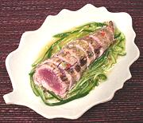

|
Spicy Seared TunaVietnam | ||||
| Serves: Effort: Sched: DoAhead: |
4 app ** 45 min Prep |
This is a very popular dish all over Vietnam, in restaurants and at street stalls. It is also made with other thick fleshed fish, but Tuna is considered best. | |||
|
1 8 ------ 1-1/2 1 2 2 3 2 1/4 ------ 2 |
# oz --- in cl T T T c --- t |
Tuna, fresh (1) Cucumber (2) -- Dressing Ginger root Garlic Thai Chilis (3) Sugar Nuoc Cham (4) Lime Juice Water -------- Oil |
Prep (40 min)
|